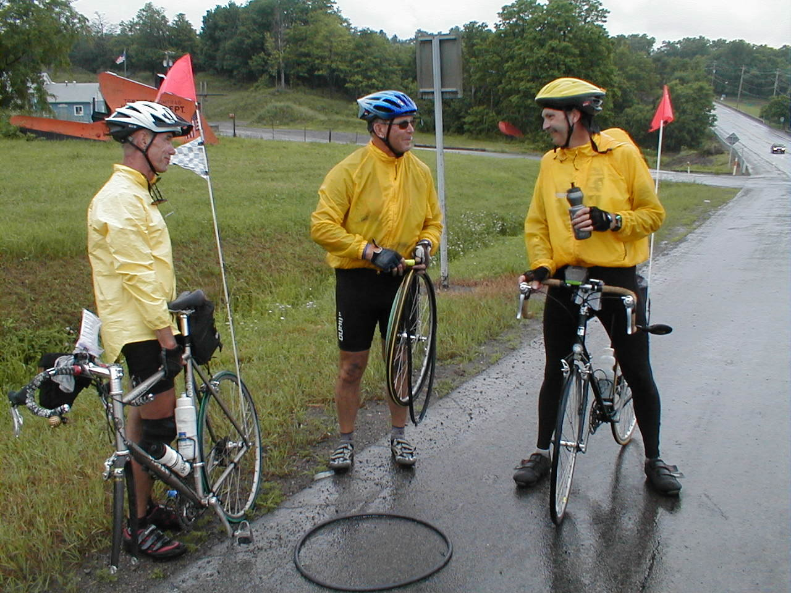

Day 42: June 23, Hamburg, NY to Canandaigua, NYPrevious Day - Home - Next Day Photo of the DayOne of today's many flat tires. Kevin (left), Carl (middle), and I (behing camera) all had 3 flats today. Keegan's LogDay 42: June 23, Hamburg, NY to Canandaigua, NY Mileage: 96.02 milesWeather: Cold and raining, Light winds Vertical Climb: 3100 feet Riding Time: 6:45 The rain began early this morning, long before we awoke. I broke out the rain gear and put on my jacket to ride to breakfast, the Denny's a half mile down the road. It was cold in the early morning, in the low 50s, and the steady rain made it feel even colder. Breakfast went much more smoothly than dinner last night, we left before 7:00dack to the hotel for luggage loading and final preparations. The local weather forecasts showed "a nice weekend", I really don't know who makes this stuff up. The weather was almost constant throughout the day, it never got above the low 60s and a steady rain fell for all but a few portions at the end of the ride. The last few times we've ridden in rain it wasn't too bad, but today everyone just wanted to get to the next hotel, right from the start. Other than a quick stop at a general store in the morning, we rode straight to the first sag stop at 30 miles. Next to the sag was a little coffee shop, dad and I stopped in for a Mexican hot chocolate (cinnamon flavored) and a strudel, I thought about wringing out my clothes but figured it wasn't of much use. Pat did a quick fix on my wheel, I broke another spoke in the morning, that makes 5 now. The route followed Highway 20 almost the entire distance from one hotel to the next. The road was good for bicycling, big shoulders and most of the heavy traffic takes the nearby interstate. There were some formidable grades, especially toward the end of the ride, but the hills really didn't seem too bad. One of the side effects of riding in the rain is the increase in flat tires, the water washes up junk from the road and softens the rubber, a bad combination. I got two flats only three miles apart about halfway between the first and second sags, and it seemed like you couldn't travel 2 miles without passing a rider on the side of the road changing a tire. We took a poll at route rap later on, 30 flats for the whole group today. The second sag had been moved inside a firehouse to get out of the rain, I decided to eat lots of munchies instead of opting for the big lunch. My two flats had put us pretty far back in the pack, so we left just as the sweep was pulling in. Only about 3 miles from the sag I got my third flat, a pair of racks had made their way through the front tire this time. This one was easy to fix, so we were rolling again in no time. On the way in we stopped a few times to help other unfortunate souls with air deficiencies, we finally pulled in to Canandaigua around 4:00. We first stopped at the bike store to buy some patches, then went across the street to the hotel. Route rap was uneventful, we went to the Ponderosa across the street for a buffet dinner. Afterward I took my bike down to have Pat replace the broken spoke, I had bought spares back in Erie but of course they were too long. But Pat found a spoke and got the wheel round again, as true as it's ever been. Meanwhile dad went to the laundromat to clean our road grit encrusted clothes, just incase we should need our rain gear again soon. Tomorrow is a short day, only 68 miles into Syracuse, NY. Actually it's our first day under 70 miles since Abilene, Kansas, but who's counting. The weather forecast really does look a lot better, hopefully tomorrow will be a good ride. Phil's LogToday was a tough day. By rights, Saturday should be a day of rest and fun. It didn't sound bad at all, 93 miles of pleasant riding on a wide highway past farms and vineyards, and a few hills. I put on my riding clothes, my sunscreen, and opened the motel door. The local TV weatherman the night before had predicted a perfect weekend. To my surprise, the truth was, RAIN. Dark gray and rain, and not just a light rain. So Keegan and I dug our rain jackets and tights out of our bags, and rolled the bikes out to ride the half mile to breakfast. Maybe it will end soon. It did not. It rained to the first sag stop at 30 miles. Rather than stand under an eave, Keegan and I and a few others went to a Christian coffee shop and had the prettiest and best tasting cup of hot chocolate you could imagine. Then we went back out into the rain. We are riding highways 5&20 which run eastward across upper New York State. The New York State Thruway is a few miles south, so it picks up all but the local traffic and US Mail semis, the latter for reasons I can't explain, but there is a lot of mail up here! The road was very good, nice shoulder. And since New York has such wonderful recycling provisions (and incentives), there is very little litter, or glass. But for reasons that no one on the tour understands, wet tires are much more susceptible to flats. Is it because small stuff sticks to the wet tire and has more time to imbed itself? Is it because the rubber slides less, or more, against a sharp object? Is it because the rubber cuts earlier, as Pat the Kiwi suggests? Who knows. But this is the kind of stuff you find yourself thinking about when you ride your bicycle for 8 hours in a 58¡ rain. It ain't pretty. The second sag stop was moved from a park to a fire station to keep it under cover. Avon, I recall, was the town. It was interesting to look at the modern engines and read the notices on the board as we ate Nutribars and drank our Gatorade. As a group, we only had 30 flats today. 30 flats!!! Keegan had three, Lynn four, none for me. Keegan even broke a spoke today. We were SO happy to roll into the motel and te a hot shower. And tonight, Saturday night, I'm alone in a laundromat writing this. Tomorrow, to Syracuse, will be better. |
{kind=link}